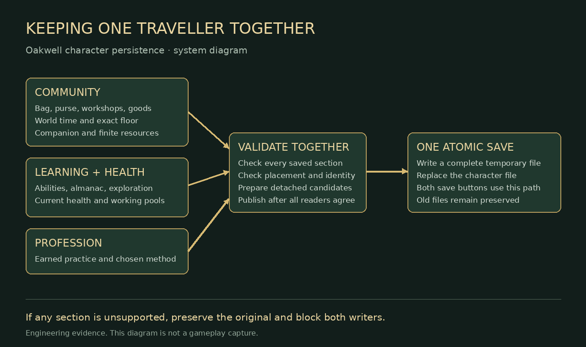
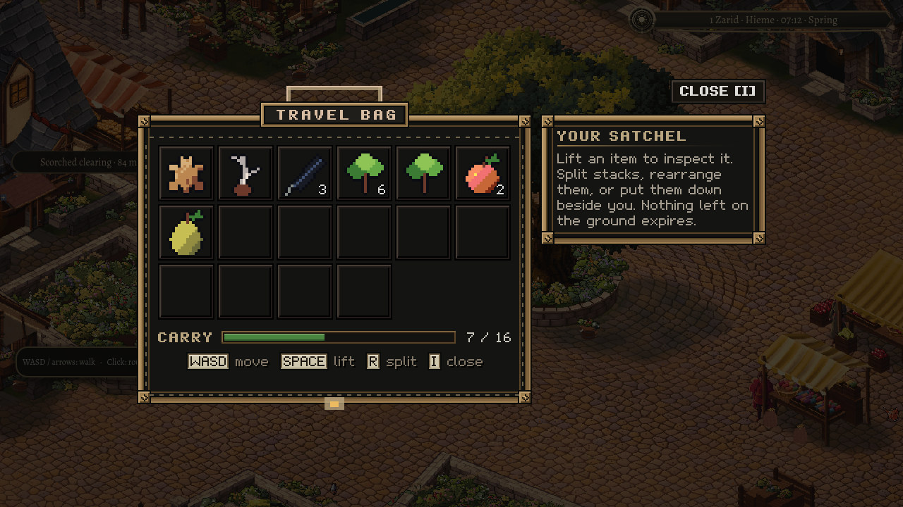
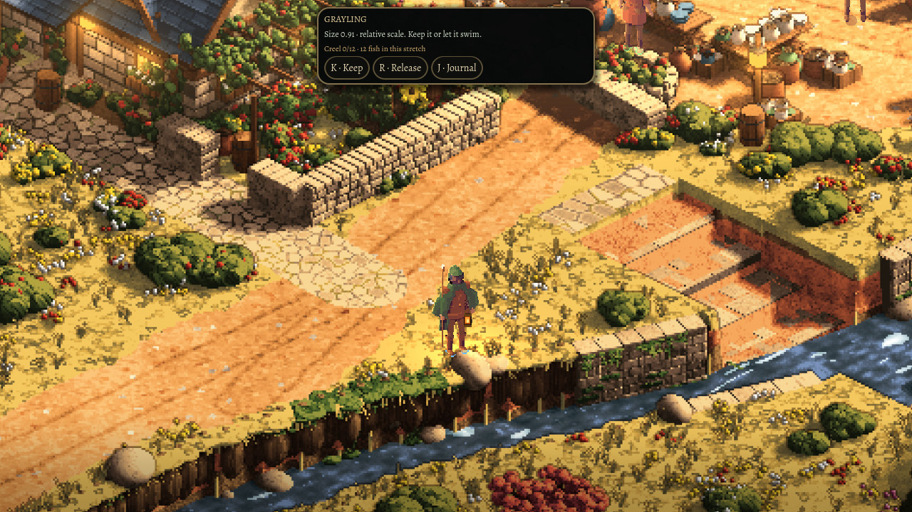

1 November 2026
A traveller should come back whole
A traveller leaves Oakwell with a few apples, a half-healed wound and something new in their almanac. On returning, all three should belong to the same moment.
That sounds obvious. It becomes less simple as a little town grows into a game. The satchel and its money had learned to travel with the town's workshops, deliveries and clock. Abilities, health and discoveries had their own history. Both could be correct on their own while remembering different moments.
One journey, one memory
This pass brings those histories under one character save. The community still owns the real goods and money. The learning book still owns abilities, health and discoveries. Earned profession choices have a place alongside them. Saving gathers those existing records into one complete document, checks it, then replaces the previous character file in one step.

Loading follows the same rule. First read everything into detached candidates. Check the town and world, each record's version, the character's floor and stair, the finite resources and the earned choices. Only after those checks agree does the traveller step back into the town.
An unreadable section protects the entire saved character. It does not load the apples first and discover a problem with health afterward. Older separate files are read together when no character save exists, and are kept after the new save is written.

Why this comes before the profession menu
Herbalism is where the boundary matters most. Tasting an unfamiliar leaf already connects a consumed specimen, a remembered sensation and the character's health. Those changes now have the same save boundary. A future remedy will need that same care: its healing must travel with the ingredient it consumed.
The profession rules already describe practice, a deliberate commitment and earned methods. This change makes room for those choices without giving the satchel a second owner or replacing the almanac with an older record. The full profession interface and its playable preparation loop remain work to do.
Bringing the old scene a little closer to retirement
The next pass removes the retired scene's duplicate fishing adapter. Town fishing already has its own real banks, float, catch decision and journal. Keeping a second scene implementation meant keeping another set of prompts, input hooks and tests alive after the act had moved home.
The fish ecology and fishing rules stay. The playable town stays. The obsolete scene adapter goes, with the town's existing angling journey serving as the verification gate.

A world can grow through new places and new actions. Sometimes it also needs a careful pass through the joins, so that the next thing we add has somewhere dependable to belong.